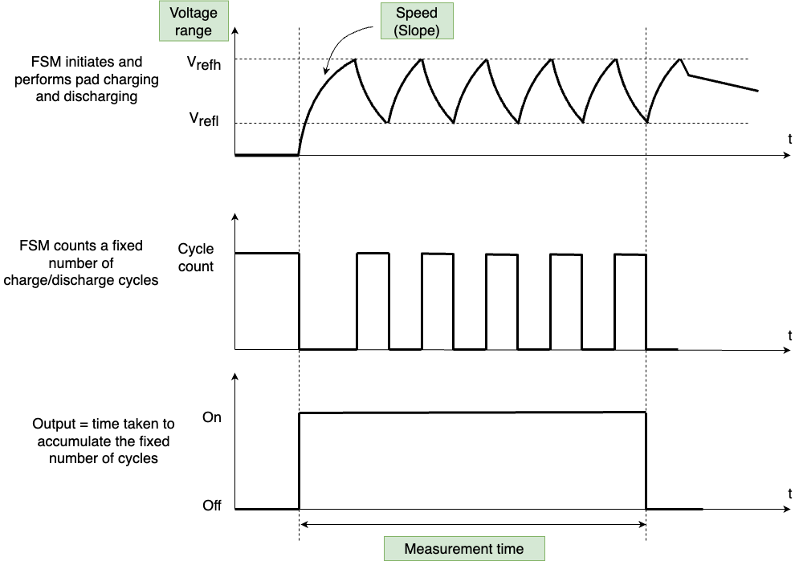
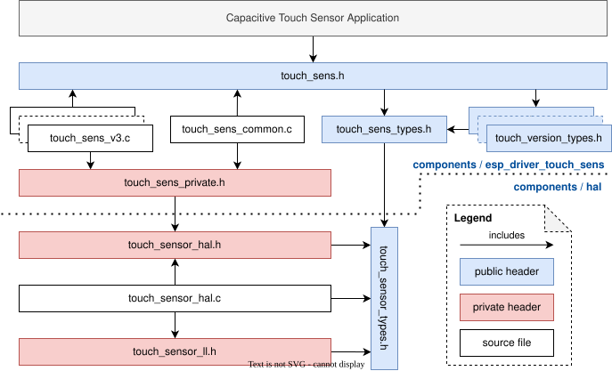
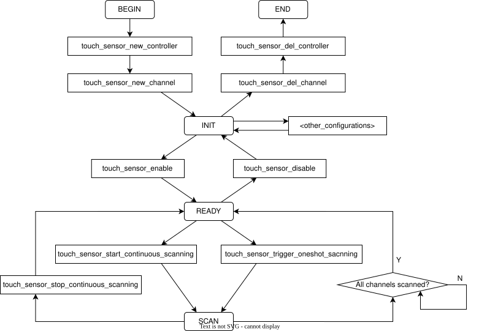

Capacitive Touch Sensor
Introduction
A touch sensor system is built on a substrate which carries electrodes and relevant connections under a protective flat surface. When the surface is touched, the capacitance variation is used to evaluate if the touch was valid.
The sensing pads can be arranged in different combinations (e.g., matrix, slider), so that a larger area or more points can be detected. The touch pad sensing process is under the control of a hardware-implemented finite-state machine (FSM) which is initiated by software or a dedicated hardware timer.
For design, operation, and control registers of a touch sensor, see ESP32-P4 Technical Reference Manual > On-Chip Sensors and Analog Signal Processing [PDF].
In-depth design details of touch sensors and firmware development guidelines for the ESP32-P4 are available in Touch Sensor Application Note.
Overview of Capacitive Touch Sensor Versions
Hardware Version |
Chip |
Main Features |
|---|---|---|
V1 |
ESP32 |
Version 1, the channel value decreases when it is touched |
V2 |
ESP32-S2 |
Version 2, the channel value increases when it is touched Supports hardware filter, benchmark, waterproof, proximity sensing and sleep wake-up |
ESP32-S3 |
Version 2, support proximity measurement done interrupt |
|
V3 |
ESP32-P4 ESP32-H4 ESP32-S31 |
Version 3, support frequency hopping |
Measurement Principle
The touch sensor will charge and discharge the touch channel by the internal current or voltage bias. Due to the internal capacitance and the stray capacitance in the circuit, the signals on the touch pins will present as a sawtooth wave. When the finger is approaching or touched on the touch pad, the capacitance of the touch channel increases, which leads to a slower charge and discharge, and a longer sawtooth period.
The touch sensor counts the number of clock cycles spent for a fixed number of charge-discharge cycles, and the count result serves as the raw data. The number of charge-discharge cycles for a single measurement can be specified by touch_sensor_sample_config_t::charge_duration_ms, and the interval between two measurements can be specified by touch_sensor_config_t::meas_interval_us.

Touch Sensor Working Principle
Overview of Touch Sensor Channels
Channel |
GPIO |
|---|---|
CH1 |
IO2 |
CH2 |
IO3 |
CH3 |
IO4 |
CH4 |
IO5 |
CH5 |
IO6 |
CH6 |
IO7 |
CH7 |
IO8 |
CH8 |
IO9 |
CH9 |
IO10 |
CH10 |
IO11 |
CH11 |
IO12 |
CH12 |
IO13 |
CH13 |
IO14 |
CH14 |
IO15 |
CH15 |
Internal |
Terminology in the Driver
Touch Sensor Controller: The controller of the touch sensor, responsible for configuring and managing the touch sensor.
Touch Sensor Channel: A specific touch sensor sampling channel. A touch sensor module has multiple touch channels, which are usually connected to the touch pad for measuring the capacitance change. In the driver, sampling of one channel is called one
measurementand the scanning of all registered channels is called onescan.
Touch Sensor Sampling Configuration: Touch sensor sampling configuration refers to all the hardware configurations that related to the sampling. It can determine how the touch channels sample by setting the number of charging times, charging frequency, measurement interval, etc. The ESP32-P4 supports multiple sets of sample configuration, which means it can support frequency hopping.
File Structure

File Structure of Touch Sensor Driver
Finite-state Machine
The following diagram shows the state machine of the touch sensor driver, which describes the driver state after calling a function, and the constraint of the state transition.

Finite-state Machine of Touch Sensor Driver
The diagram above is the finite-state machine of the touch sensor driver, which describes how the state transferred by invoking different APIs. <other_configurations> in the diagram stands for the other optional configurations, like reconfigurations to the touch sensor controller or channels, callback registration, filter, and so on.
Note
touch_channel_read_data() can be called at any time after the channel is registered (i.e., since INIT state), but please take care of the validation of the data.
Functionality Introduction
Categorized by functionality, the APIs of Capacitive Touch Sensor mainly include:
Touch Sensor Controller Management
Touch Sensor is controlled by controller handle touch_sensor_handle_t, it can be initialized and allocated by touch_sensor_new_controller().
// Some target has multiple sets of sample configuration can be set, here take one for example
#define SAMPLE_NUM 1
touch_sensor_handle_t sens_handle = NULL;
// sample configuration
touch_sensor_sample_config_t sample_cfg[SAMPLE_NUM] = {
// Specify sample configuration or apply the default sample configuration via `TOUCH_SENSOR_Vn_DEFAULT_SAMPLE_CONFIG`
// ...
};
// Use the default touch controller configuration
touch_sensor_config_t touch_cfg = TOUCH_SENSOR_DEFAULT_BASIC_CONFIG(SAMPLE_NUM, sample_cfg);
// Allocate a new touch sensor controller handle
ESP_ERROR_CHECK(touch_sensor_new_controller(&touch_cfg, &sens_handle));
To delete the controller handle and free the software and hardware resources, please call touch_sensor_del_controller(). But note that you need to delete the other resources that based on the controller first, like the registered touch channels, otherwise it can't be deleted directly.
ESP_ERROR_CHECK(touch_sensor_del_controller(sens_handle));
You can also update the configurations via touch_sensor_reconfig_controller() before the controller is enabled.
touch_sensor_config_t touch_cfg = {
// New controller configurations
// ...
};
ESP_ERROR_CHECK(touch_sensor_reconfig_controller(sens_handle, &touch_cfg));
Touch Sensor Channel Management
There are multiple touch channels in the touch sensor module, the touch sensor channel is controlled by the channel handle touch_channel_handle_t. It can be initialized and allocated by touch_sensor_new_channel().
// ...
touch_channel_config_t chan_cfg = {
// Touch channel configurations
// ...
};
touch_channel_handle_t chan_handle = NULL;
int chan_id = 0;
// Allocate a new touch sensor controller handle
ESP_ERROR_CHECK(touch_sensor_new_channel(sens_handle, chan_id, &chan_cfg, &chan_handle));
To delete the touch channel handle and free the software and hardware resources, please call touch_sensor_del_channel().
ESP_ERROR_CHECK(touch_sensor_del_channel(chan_handle));
You can also update the configurations via touch_sensor_reconfig_channel() before the controller is enabled.
touch_channel_config_t chan_cfg = {
// New touch channel configurations
// ...
};
ESP_ERROR_CHECK(touch_sensor_reconfig_channel(chan_handle, &chan_cfg));
Filter Configuration
The filter can help to increase the stability in different use cases. The filter can be registered by calling touch_sensor_config_filter() and specify the configurations touch_sensor_filter_config_t. These configurations mainly determine how to filter and update the benchmark and read data. Please note that all touch channels will share this filter.
To deregister the filter, you can call touch_sensor_config_filter() again, and set the second parameter (i.e. touch_sensor_filter_config_t pointer) to NULL.
The touch sensor version v3 supports the hardware filter. The filtering and updating strategy for the benchmark can be configured by touch_sensor_filter_config_t::benchmark, while the filtering of read values can be configured by touch_sensor_filter_config_t::data.
// ...
touch_sensor_filter_config_t filter_config = {
// Filter configurations
// ...
};
// Register the filter
ESP_ERROR_CHECK(touch_sensor_config_filter(sens_handle, &filter_config));
// ...
// Deregister the filter
ESP_ERROR_CHECK(touch_sensor_config_filter(sens_handle, NULL));
Callback
Calling touch_sensor_register_callbacks() to register the touch sensor event callbacks. Once the touch sensor events (like on_active, on_inactive) trigger, the corresponding callbacks will be invoked, so that to deal with the event in the upper application.
For the general example, when the measured data of the current touch channel exceed the benchmark + active_threshold, this channel is activated, and the driver will call on_active callback to inform the application layer. Similar, when the active channel measured a lower data than benchmark + active_threshold, then this channel will be inactivated, and on_inactive will be called to inform this channel is released.
Note
To ensure the stability of the triggering and releasing, active_hysteresis and debounce_cnt can be configured to avoid the frequent triggering that caused by jitter and noise.
Please refer to touch_event_callbacks_t for the details about the supported callbacks.
touch_event_callbacks_t callbacks = {
.on_active = example_touch_on_active_cb,
// Other callbacks
// ...
};
// Register callbacks
ESP_ERROR_CHECK(touch_sensor_register_callbacks(sens_handle, &callbacks, NULL));
// To deregister callbacks, set the corresponding callback to NULL
callbacks.on_active = NULL;
// Other callbacks to deregister
// ...
ESP_ERROR_CHECK(touch_sensor_register_callbacks(sens_handle, &callbacks, NULL));
Enable and Disable
After finished the configuration of the touch controller and touch channels, touch_sensor_enable() can be called to enable the touch sensor controller. It will enter READY status and power on the registered channels, then you can start scanning and sampling the touch data. Note that you can only do scanning and reading operation once the controller is enabled. If you want to update the controller or channel configurations, you need to call touch_sensor_disable() first.
// Enable touch sensor
ESP_ERROR_CHECK(touch_sensor_enable(sens_handle));
// ...
// Disable touch sensor
ESP_ERROR_CHECK(touch_sensor_disable(sens_handle));
Continuous Scan
With the touch controller enabled, touch_sensor_start_continuous_scanning() can be called to start the continuous scanning to all the registered touch channels. The read data of these touch channels will be updated automatically in each scan. Calling touch_sensor_stop_continuous_scanning() can stop the continuous scan.
// Start continuous scan
ESP_ERROR_CHECK(touch_sensor_start_continuous_scanning(sens_handle));
// ...
// Stop continuous scan
ESP_ERROR_CHECK(touch_sensor_stop_continuous_scanning(sens_handle));
Oneshot Scan
With the touch controller enabled, touch_sensor_trigger_oneshot_scanning() can be called to trigger an one-time scan to all the registered touch channels. Note that oneshot scan is a blocking function, it will keep blocking and only return when the scan is finished. Moreover, you can't trigger an oneshot scan after the continuous scan has started.
// Trigger an oneshot scan with timeout 1000 ms
ESP_ERROR_CHECK(touch_sensor_trigger_oneshot_scanning(sens_handle, 1000));
Read Measurement Data
Call touch_channel_read_data() to read the data with different types. Like, benchmark, smooth data, etc. You can refer to touch_chan_data_type_t for the supported data types.
The ESP32-P4 supports frequency hopping by configuring multiple set of sample configurations, touch_channel_read_data() can read out the data of each sample configuration in a single call, you can determine the sample configuration number by touch_sensor_config_t::sample_cfg_num, and pass an array (which length is not smaller than the configuration number) to the third parameter *data, so that all the measured data of this channel will be stored in the array.
#define SAMPLE_NUM 1 // Take one sample configuration set for example
uint32_t smooth_data[SAMPLE_NUM] = {};
// Read the smooth data
ESP_ERROR_CHECK(touch_channel_read_data(chan_handle, TOUCH_CHAN_DATA_TYPE_SMOOTH, smooth_data));
Benchmark Configuration
Normally, you don't have to set the benchmark manually, but you can force reset the benchmark to the current smooth value by calling touch_channel_config_benchmark() when necessary.
touch_chan_benchmark_config_t benchmark_cfg = {
// Benchmark operations
// ...
};
ESP_ERROR_CHECK(touch_channel_config_benchmark(chan_handle, &benchmark_cfg));
Waterproof Configuration
The ESP32-P4 supports waterproof. Waterproof can be registered by calling touch_sensor_config_waterproof() and specify the configurations touch_waterproof_config_t. There are two parts of the waterproof function:
Immersion (in-water) proof:
touch_waterproof_config_t::guard_chancan be specified for detecting immersion. It is usually designed as a ring on the PCB, which surrounds all the other touch pads. When this guard ring channel is triggered, that means the touch panel is immersed by water, all the touch channels will stop measuring to avoid falsely triggering.Moisture (water-drop) proof:
touch_waterproof_config_t::shield_chancan be specified for detecting moisture. It usually uses the grid layout on the PCB, which covers the whole touch panel. The shield channel will charge and discharge synchronously with the current touch channel, when there is a water droplet covers both shield channel and normal touch channel,touch_waterproof_config_t::shield_drvcan strengthen the electrical coupling caused by the water droplets, and then reconfigure the active threshold based on the disturbance to eliminate the influence that introduced by the water droplet.
To deregister the waterproof function, you can call touch_sensor_config_waterproof() again, and set the second parameter (i.e. touch_waterproof_config_t pointer) to NULL.
touch_waterproof_config_t waterproof_cfg = {
// Waterproof configurations
// ...
};
// Register waterproof function
ESP_ERROR_CHECK(touch_sensor_config_waterproof(sens_handle, &waterproof_cfg));
// ...
// Deregister waterproof function
ESP_ERROR_CHECK(touch_sensor_config_waterproof(sens_handle, NULL));
Proximity Sensing Configuration
The ESP32-P4 supports proximity sensing. Proximity sensing can be registered by calling touch_sensor_config_proximity_sensing() and specify the configurations touch_proximity_config_t.
Since the capacitance change caused by proximity sensing is far less than that caused by physical touch, large area of copper foil is often used on PCB to increase the sensing area. In addition, multiple rounds of scans are needed and the result of each scan will be accumulated in the driver to improve the measurement sensitivity. The scan times (rounds) can be determined by touch_proximity_config_t::scan_times and the charging times of the proximity channel in one scan can be determined by touch_proximity_config_t::charge_times. Generally, the larger the scan times and charging times is, the higher the sensitivity will be, however, the read data will be unstable if the sensitivity is too high. Proper parameters should be determined regarding the application.
The accumulated proximity data can be read by touch_channel_read_data() with the data type TOUCH_CHAN_DATA_TYPE_PROXIMITY
To deregister the proximity sensing, you can call touch_sensor_config_proximity_sensing() again, and set the second parameter (i.e. touch_proximity_config_t pointer) to NULL.
touch_proximity_config_t prox_cfg = {
// Proximity sensing configuration
// ...
};
// Register the proximity sensing
ESP_ERROR_CHECK(touch_sensor_config_proximity_sensing(sens_handle, &prox_cfg));
// ...
// Deregister the proximity sensing
ESP_ERROR_CHECK(touch_sensor_config_proximity_sensing(sens_handle, NULL));
Sleep Wake-up Configuration
The ESP32-P4 supports waking-up the chip from light sleep or deep sleep with the touch sensor as a wake-up source. The wake-up functionality can be registered by calling touch_sensor_config_sleep_wakeup() and specifying the configurations touch_sleep_config_t.
After registering the touch sensor sleep wake-up, the chip will continue to sample the touch channels after sleep, which will increase the power consumption during the sleep. To reduce the sleep power consumption, you can reduce the number of charging and discharging times, increase the sampling interval, etc.
Moreover, please note that the operations like sampling, wake-up are all done by hardware when the main core is sleeping. Since this driver runs on the main core, it cannot provide functions such as reading or configuring during the sleep.
Light sleep wake-up: you need to set
slp_wakeup_lvltoTOUCH_LIGHT_SLEEP_WAKEUPto enable the light sleep wake-up by touch sensor. Note that any registered touch channel can wake-up the chip from light sleep.Deep sleep wake-up: beside setting
slp_wakeup_lvltoTOUCH_DEEP_SLEEP_WAKEUP, you need to specifydeep_slp_chanadditionally. In order to reduce the power consumption, only the specified channel can wake-up the chip from the deep sleep when RTC_PREI power domain off. And also, the driver supports to store another set of configurations for the deep sleep viadeep_slp_sens_cfg, this set of configurations only takes effect during the deep sleep, you can customize the configurations to save more power. The configurations will be reset to the previous set after waking-up from the deep sleep. Please be aware that, not only deep sleep wake-up, but also light sleep wake-up will be enabled when theslp_wakeup_lvlisTOUCH_DEEP_SLEEP_WAKEUP.
You can decide whether allow to power down RTC_PERIPH domain during the Deep-sleep by touch_sleep_config_t::deep_slp_allow_pd. If allowed, the RTC_PERIPH domain will be powered down after the chip enters Deep-sleep, and only the specified touch_sleep_config_t::deep_slp_chan can wake-up the chip from Deep-sleep. If not allowed, all enabled touch channels can wake-up the chip from Deep-sleep.
To deregister the sleep wake-up function, you can call touch_sensor_config_sleep_wakeup() again, and set the second parameter (i.e. touch_sleep_config_t pointer) to NULL.
touch_sleep_config_t light_slp_cfg = TOUCH_SENSOR_DEFAULT_LSLP_CONFIG();
// Register the light sleep wake-up
ESP_ERROR_CHECK(touch_sensor_config_sleep_wakeup(sens_handle, &light_slp_cfg));
// ...
// Deregister the light sleep wake-up
ESP_ERROR_CHECK(touch_sensor_config_sleep_wakeup(sens_handle, NULL));
// Default Deep-sleep wake-up configurations: RTC_PERIPH will keep power on during the Deep-sleep,
// All enabled touch channel can wake-up the chip from Deep-sleep
touch_sleep_config_t deep_slp_cfg = TOUCH_SENSOR_DEFAULT_DSLP_CONFIG();
// Default Deep-sleep wake-up power down configurations: RTC_PERIPH will be powered down during the Deep-sleep,
// only the specified sleep pad can wake-up the chip from Deep-sleep
// touch_sleep_config_t deep_slp_cfg = TOUCH_SENSOR_DEFAULT_DSLP_PD_CONFIG(sleep_channel, slp_chan_thresh1, ...);
// Register the deep sleep wake-up
ESP_ERROR_CHECK(touch_sensor_config_sleep_wakeup(sens_handle, &deep_slp_cfg));
Application Examples
peripherals/touch_sensor/touch_sens_basic demonstrates how to register touch channels and read the data, including hardware requirements and project configuration instructions.
peripherals/touch_sensor/touch_sens_sleep demonstrates how to wake up the chip from the light or deep sleep by the touch sensor.
Application Notes
Touch Sensor Power Consumption Issues
Due to the capacitive charging and discharging operation in the touch sensor measurements, it is a relatively high power-consuming peripheral. In applications with high power consumption requirements, the following methods can be helpful to reduce the power consumption.
Reduce the number of touch channels: Multiple functions (such as single-press, double-press, long press, etc.) can be multiplexed on the same channel, thereby reducing the number of touch sensors.
Increase the measurement interval: By increasing the measurement interval
touch_sensor_config_t::meas_interval_us, the measurement frequency will be reduced, thereby lowering down the power consumption.Reduce single measurement charging and discharging cycles: By lowering down the single measurement charging and discharging cycles
touch_sensor_sample_config_t::charge_times, power consumption will be decreased.Lower down the LDO voltage biasing intensity: Decreasing
touch_channel_config_t::bias_voltcan reduce the power consumption.
API Reference
Header File
components/esp_driver_touch_sens/include/driver/touch_sens.h
This header file can be included with:
#include "driver/touch_sens.h"
This header file is a part of the API provided by the
esp_driver_touch_senscomponent. To declare that your component depends onesp_driver_touch_sens, add the following to your CMakeLists.txt:REQUIRES esp_driver_touch_sens
or
PRIV_REQUIRES esp_driver_touch_sens
Functions
-
esp_err_t touch_sensor_new_controller(const touch_sensor_config_t *sens_cfg, touch_sensor_handle_t *ret_sens_handle)
Allocate a new touch sensor controller.
Note
The touch sensor driver will be in INIT state after this function is called successfully.
- Parameters:
sens_cfg -- [in] Touch sensor controller configurations
ret_sens_handle -- [out] The return handle of the touch controller instance
- Returns:
ESP_OK On success
ESP_ERR_NO_MEM No memory for the touch sensor controller
ESP_ERR_INVALID_ARG Invalid argument or NULL pointer
ESP_ERR_INVALID_STATE The touch sensor controller is already allocated
-
esp_err_t touch_sensor_del_controller(touch_sensor_handle_t sens_handle)
Delete the touch sensor controller.
Note
This function can be called when the touch sensor controller is NOT enabled (i.e. INIT state).
- Parameters:
sens_handle -- [in] Touch sensor controller handle
- Returns:
ESP_OK On success
ESP_ERR_INVALID_ARG Invalid argument or NULL pointer
ESP_ERR_INVALID_STATE Controller not disabled or still some touch channels not deleted
-
esp_err_t touch_sensor_new_channel(touch_sensor_handle_t sens_handle, int chan_id, const touch_channel_config_t *chan_cfg, touch_channel_handle_t *ret_chan_handle)
Allocate a new touch channel from the touch sensor controller.
Note
This function can be called when the touch sensor controller is NOT enabled (i.e. INIT state).
- Parameters:
sens_handle -- [in] Touch sensor controller handle
chan_id -- [in] Touch channel index
chan_cfg -- [in] Touch channel configurations
ret_chan_handle -- [out] The return handle of the touch channel instance
- Returns:
ESP_OK On success
ESP_ERR_NO_MEM No memory for the touch sensor channel
ESP_ERR_INVALID_ARG Invalid argument or NULL pointer
ESP_ERR_INVALID_STATE The touch sensor controller has not disabled or this channel has been allocated
-
esp_err_t touch_sensor_del_channel(touch_channel_handle_t chan_handle)
Delete the touch channel.
Note
This function can be called when the touch sensor controller is NOT enabled (i.e. INIT state).
Note
If the channel has been enabled other sub-features like proximity sensing, sleep wakeup, waterproof, denoise. The attached sub-features will be disabled while deleting the channel.
- Parameters:
chan_handle -- [in] Touch channel handle
- Returns:
ESP_OK On success
ESP_ERR_INVALID_ARG Invalid argument or NULL pointer
ESP_ERR_INVALID_STATE The touch sensor controller has not disabled
-
esp_err_t touch_sensor_reconfig_controller(touch_sensor_handle_t sens_handle, const touch_sensor_config_t *sens_cfg)
Re-configure the touch sensor controller.
Note
This function can be called when the touch sensor controller is NOT enabled (i.e. INIT state).
Note
The re-configuration only applies to the touch controller, so it requires the controller handle that allocated from
touch_sensor_new_controller, meanwhile, it won't affect the touch channels, no matter the channels are allocated or not.- Parameters:
sens_handle -- [in] Touch sensor controller handle
sens_cfg -- [in] Touch sensor controller configurations
- Returns:
ESP_OK On success
ESP_ERR_INVALID_ARG Invalid argument or NULL pointer
ESP_ERR_INVALID_STATE The touch sensor controller has not disabled
-
esp_err_t touch_sensor_reconfig_channel(touch_channel_handle_t chan_handle, const touch_channel_config_t *chan_cfg)
Re-configure the touch channel.
Note
This function can be called when the touch sensor controller is NOT enabled (i.e. INIT state).
Note
The re-configuration only applies to a particular touch channel, so it requires the channel handle that allocated from
touch_sensor_new_channel- Parameters:
chan_handle -- [in] Touch channel handle
chan_cfg -- [in] Touch channel configurations
- Returns:
ESP_OK On success
ESP_ERR_INVALID_ARG Invalid argument or NULL pointer
ESP_ERR_INVALID_STATE The touch sensor controller has not disabled
-
esp_err_t touch_sensor_config_filter(touch_sensor_handle_t sens_handle, const touch_sensor_filter_config_t *filter_cfg)
Configure the touch sensor filter.
Note
This function is allowed to be called after the touch sensor is enabled
- Parameters:
sens_handle -- [in] Touch sensor controller handle
filter_cfg -- [in] Filter configurations, set NULL to disable the filter
- Returns:
ESP_OK: Configure the filter success
ESP_ERR_INVALID_ARG: The sensor handle is NULL
-
esp_err_t touch_sensor_enable(touch_sensor_handle_t sens_handle)
Enable the touch sensor controller.
Note
This function can be called when the touch sensor controller is NOT enabled (i.e. INIT state). And the touch sensor driver will be in ENABLED state after this function is called successfully.
Note
Enable the touch sensor will power on the registered touch channels
- Parameters:
sens_handle -- [in] Touch sensor controller handle
- Returns:
ESP_OK On success
ESP_ERR_INVALID_ARG Invalid argument or NULL pointer
ESP_ERR_INVALID_STATE The touch sensor controller has already enabled
-
esp_err_t touch_sensor_disable(touch_sensor_handle_t sens_handle)
Disable the touch sensor controller.
Note
This function can only be called after the touch sensor controller is enabled (i.e. ENABLED state). And the touch sensor driver will be in INIT state after this function is called successfully.
Note
Disable the touch sensor will power off the registered touch channels
- Parameters:
sens_handle -- [in] Touch sensor controller handle
- Returns:
ESP_OK On success
ESP_ERR_INVALID_ARG Invalid argument or NULL pointer
ESP_ERR_INVALID_STATE The touch sensor controller has already disabled
-
esp_err_t touch_sensor_start_continuous_scanning(touch_sensor_handle_t sens_handle)
Start the scanning of the registered touch channels continuously.
Note
This function can only be called after the touch sensor controller is enabled (i.e. ENABLED state). And the touch sensor driver will be in SCANNING state after this function is called successfully. And it can also be called in ISR/callback context.
Note
The hardware FSM (Finite-State Machine) of touch sensor will be driven by its hardware timer continuously and repeatedly. i.e., the registered channels will be scanned one by one repeatedly.
- Parameters:
sens_handle -- [in] Touch sensor controller handle
- Returns:
ESP_OK On success
ESP_ERR_INVALID_ARG Invalid argument or NULL pointer
ESP_ERR_INVALID_STATE The touch sensor controller is not enabled or the continuous scanning has started
-
esp_err_t touch_sensor_stop_continuous_scanning(touch_sensor_handle_t sens_handle)
Stop the continuous scanning of the registered touch channels immediately.
Note
This function can only be called after the continuous scanning started (i.e. SCANNING state). And the touch sensor driver will be in ENABLED state after this function is called successfully. And it can also be called in ISR/callback context.
Note
Stop the hardware timer and reset the FSM (Finite-State Machine) of the touch sensor controller
- Parameters:
sens_handle -- [in] Touch sensor controller handle
- Returns:
ESP_OK On success
ESP_ERR_INVALID_ARG Invalid argument or NULL pointer
ESP_ERR_INVALID_STATE The continuous scanning has stopped
-
esp_err_t touch_sensor_trigger_oneshot_scanning(touch_sensor_handle_t sens_handle, int timeout_ms)
Trigger an oneshot scanning for all the registered channels.
Note
This function can only be called after the touch sensor controller is enabled (i.e. ENABLED state). And the touch sensor driver will be in SCANNING state after this function is called successfully, and then switch back to ENABLED state after the scanning is done or timeout.
Note
The block time of this function depends on various factors, In common practice, recommend to set the timeout to several seconds or wait forever, because oneshot scanning can't last for so long.
- Parameters:
sens_handle -- [in] Touch sensor controller handle
timeout_ms -- [in] Set a positive value or zero means scan timeout in milliseconds Set a negative value means wait forever until finished scanning
- Returns:
ESP_OK On success
ESP_ERR_TIMEOUT Timeout to finish the oneshot scanning
ESP_ERR_INVALID_ARG Invalid argument
ESP_ERR_INVALID_STATE The touch sensor controller is not enabled or the continuous scanning has started
-
esp_err_t touch_sensor_register_callbacks(touch_sensor_handle_t sens_handle, const touch_event_callbacks_t *callbacks, void *user_ctx)
Register the touch sensor callbacks.
Note
This function can be called when the touch sensor controller is NOT enabled (i.e. INIT state).
- Parameters:
sens_handle -- [in] Touch sensor controller handle
callbacks -- [in] Callback functions
user_ctx -- [in] User context that will be passed to the callback functions
- Returns:
ESP_OK On success
ESP_ERR_INVALID_ARG NULL pointer
ESP_ERR_INVALID_STATE Touch sensor controller has not disabled
-
esp_err_t touch_channel_read_data(touch_channel_handle_t chan_handle, touch_chan_data_type_t type, uint32_t *data)
Read the touch channel data according to the types.
Note
This function can be called no matter the touch sensor controller is enabled or not (i.e. ENABLED or SCANNING state). And it can also be called in ISR/callback context.
Note
Specially,
TOUCH_CHAN_DATA_TYPE_PROXIMITYdata type will be read from the cached data in the driver, because the proximity data need to be accumulated in several scan times that specified bytouch_proximity_config_t::scan_times. For other data types, the data are read from the hardware registers directly (not cached in the driver). The channel data in the register will be updated once the measurement of this channels is done, And keep locked until the next measurement is done.- Parameters:
chan_handle -- [in] Touch channel handle
type -- [in] Specify the data type to read
data -- [out] The data array pointer. If the target supports multiple sample configurations (SOC_TOUCH_SAMPLE_CFG_NUM), the array length should be equal to the frequency hopping number that specified in
touch_sensor_config_t::sample_cfg_num, otherwise the array length should be 1.
- Returns:
ESP_OK On success
ESP_ERR_INVALID_ARG Invalid argument or NULL pointer
-
esp_err_t touch_channel_config_benchmark(touch_channel_handle_t chan_handle, const touch_chan_benchmark_config_t *benchmark_cfg)
Confiture the touch sensor benchmark for all the registered channels.
Note
This function can be called no matter the touch sensor controller is enabled or not (i.e. ENABLED or SCANNING state). And it can also be called in ISR/callback context.
- Parameters:
chan_handle -- [in] Touch channel handle
benchmark_cfg -- [in] The benchmark configurations
- Returns:
ESP_OK On success
ESP_ERR_INVALID_ARG NULL pointer
-
esp_err_t touch_sensor_config_waterproof(touch_sensor_handle_t sens_handle, const touch_waterproof_config_t *wp_cfg)
Configure the touch sensor water proof channels.
Note
Once waterproof is enabled, the other touch channels won't be updated unless the shield channels is activated.
- Parameters:
sens_handle -- [in] Touch sensor controller handle
wp_cfg -- [in] Water proof channel configurations, set NULL to disable the water proof function
- Returns:
ESP_OK: Configure the water proof success
ESP_ERR_INVALID_ARG: The sensor handle is NULL
ESP_ERR_INVALID_STATE: The touch sensor is enabled
-
esp_err_t touch_sensor_config_proximity_sensing(touch_sensor_handle_t sens_handle, const touch_proximity_config_t *prox_cfg)
Configure the touch sensor proximity sensing channels.
- Parameters:
sens_handle -- [in] Touch sensor controller handle
prox_cfg -- [in] Proximity channels configurations, set NULL to disable the proximity sensing
- Returns:
ESP_OK: Configure the proximity channel success
ESP_ERR_INVALID_ARG: The sensor handle is NULL
ESP_ERR_INVALID_STATE: The touch sensor is enabled
-
esp_err_t touch_sensor_config_sleep_wakeup(touch_sensor_handle_t sens_handle, const touch_sleep_config_t *sleep_cfg)
Configure the touch sensor to wake-up the chip from sleep.
Note
Call this function to enable/disable the touch sensor wake-up the chip from deep/light sleep To only enable the touch sensor wake-up the chip from light sleep, set the
touch_sleep_config_t::deep_slp_chanto NULL. During the light sleep, all enabled touch channels will keep working, and any one of them can wake-up the chip from light sleep. To enable the touch sensor wake-up the chip from both light and deep sleep, set thetouch_sleep_config_t::deep_slp_chanto an enabled channel. During the deep sleep, only this specified channels can work and wake-up the chip from the deep sleep, and other enabled channels can only wake-up the chip from light sleep.- Parameters:
sens_handle -- [in] Touch sensor controller handle
sleep_cfg -- [in] Sleep wake-up configurations, set NULL to disable the touch sensor wake-up the chip from sleep
- Returns:
ESP_OK: Configure the sleep channel success
ESP_ERR_INVALID_ARG: The sensor handle is NULL
ESP_ERR_INVALID_STATE: The touch sensor is enabled
-
esp_err_t touch_sensor_get_channel_info(touch_channel_handle_t chan_handle, touch_chan_info_t *chan_info)
Get the touch channel information by the channel handle.
- Parameters:
chan_handle -- [in] Touch channel handle
chan_info -- [out] Touch channel information
- Returns:
ESP_OK: Success to get the channel information
ESP_ERR_INVALID_ARG: NULL pointer
Structures
-
struct touch_chan_info_t
Touch channel information.
Public Members
-
int chan_id
Touch channel number
-
int chan_gpio
Corresponding GPIO of this channel
-
uint32_t abs_active_thresh[TOUCH_SAMPLE_CFG_NUM]
The configured absolute threshould of this channel (only used for V1)
-
uint32_t active_thresh[TOUCH_SAMPLE_CFG_NUM]
The configured relative threshould of this channel (used except V1)
-
uint32_t can_wake_dp_slp
Whether this channel can wakeup from deep sleep
-
uint32_t is_proxi
Whether this channel is used for proximity sensing
-
uint32_t is_guard
Whether this channel is used for waterproof guard channel
-
uint32_t is_shield
Whether this channel is used for waterproof shield channel
-
struct touch_chan_info_t flags
Channel sub-feature flags
-
int chan_id
Header File
components/esp_driver_touch_sens/include/driver/touch_sens_types.h
This header file can be included with:
#include "driver/touch_sens_types.h"
This header file is a part of the API provided by the
esp_driver_touch_senscomponent. To declare that your component depends onesp_driver_touch_sens, add the following to your CMakeLists.txt:REQUIRES esp_driver_touch_sens
or
PRIV_REQUIRES esp_driver_touch_sens
Type Definitions
-
typedef struct touch_sensor_s *touch_sensor_handle_t
The handle of touch sensor controller
-
typedef struct touch_channel_s *touch_channel_handle_t
The handle of touch channel
Enumerations
-
enum touch_sleep_wakeup_level_t
The chip sleep level that allows the touch sensor to wake-up.
Values:
-
enumerator TOUCH_LIGHT_SLEEP_WAKEUP
Only enable the touch sensor to wake up the chip from light sleep
-
enumerator TOUCH_DEEP_SLEEP_WAKEUP
Enable the touch sensor to wake up the chip from deep sleep or light sleep
-
enumerator TOUCH_LIGHT_SLEEP_WAKEUP
Header File
components/esp_driver_touch_sens/hw_ver3/include/driver/touch_version_types.h
This header file can be included with:
#include "driver/touch_version_types.h"
This header file is a part of the API provided by the
esp_driver_touch_senscomponent. To declare that your component depends onesp_driver_touch_sens, add the following to your CMakeLists.txt:REQUIRES esp_driver_touch_sens
or
PRIV_REQUIRES esp_driver_touch_sens
Structures
-
struct touch_sensor_sample_config_t
Sample configurations of the touch sensor.
Public Members
-
uint32_t div_num
Division of the touch output pulse. It is proportional to the gain of the read data, the greater the div_num, the higher gain of the read data. If the read data is exceeded the maximum range, please reduce the div_num.
-
uint32_t charge_times
The charge and discharge times of this sample configuration, the read data are positive correlation to the charge_times
-
uint8_t rc_filter_res
The resistance of the RC filter of this sample configuration, range [0, 3], while 0 = 0K, 1 = 1.5K, 2 = 3K, 3 = 4.5K
-
uint8_t rc_filter_cap
The capacitance of the RC filter of this sample configuration, range [0, 127], while 0 = 0pF, 1 = 20fF, ..., 127 = 2.54pF
-
uint8_t low_drv
Low speed touch driver, only effective when high speed driver is disabled
-
uint8_t high_drv
High speed touch driver
-
uint8_t bias_volt
The Internal LDO voltage, which decide the bias voltage of the sample wave, range [0,15]
-
uint32_t div_num
-
struct touch_sensor_config_t
Configurations of the touch sensor controller.
Public Members
-
uint32_t power_on_wait_us
The waiting time between the channels power on and able to measure, to ensure the data stability
-
float meas_interval_us
Measurement interval of each channels
-
uint32_t max_meas_time_us
The maximum time of measuring one channel, if the time exceeds this value, the timeout interrupt will be triggered. Set to '0' to ignore the measurement time limitation, otherwise please set a proper time considering the configurations of this sample configurations below.
-
touch_out_mode_t output_mode
Touch channel counting mode of the binarized touch output
-
uint32_t sample_cfg_num
The sample configuration number that used for sampling, CANNOT exceed TOUCH_SAMPLE_CFG_NUM
-
uint32_t trigger_rise_cnt
The counter of triggered frequency points to judge whether a channel active. For example, there are 3 sample configurations activated, and the trigger_rise_cnt is 2, then the channel will only be active when at least 2 of 3 sample configurations triggered. Range: [0 ~ sample_cfg_num], '0' means select the recommended value automatically.
-
touch_sensor_sample_config_t *sample_cfg
The array of this sample configuration configurations, the length should be specified in
touch_sensor_config_t::sample_cfg_num
-
uint32_t power_on_wait_us
-
struct touch_channel_config_t
Configurations of the touch sensor channel.
Public Members
-
uint32_t active_thresh[TOUCH_SAMPLE_CFG_NUM]
The relative active threshold of each sample configuration, while the touch channel smooth value minus benchmark value exceed this threshold, will be regarded as activated
-
uint32_t active_thresh[TOUCH_SAMPLE_CFG_NUM]
-
struct touch_sensor_filter_config_t
Configurations of the touch sensor filter.
Public Members
-
touch_benchmark_filter_mode_t filter_mode
Benchmark filter mode. IIR filter and Jitter filter can be selected, TOUCH_BM_IIR_FILTER_16 is recommended
-
uint32_t jitter_step
Jitter filter step size, only takes effect when the
filter_modeis TOUCH_BM_JITTER_FILTER. Range: [0 ~ 15]
-
int denoise_lvl
The denoise level, which determines the noise bouncing range that won't trigger benchmark update. Range: [0 ~ 4]. The greater the denoise_lvl is, more noise resistance will be. Specially,
0stands for no denoise Typically, recommend to set this field to 1.
-
struct touch_sensor_filter_config_t benchmark
Benchmark configuration.
Benchmark filter
-
touch_smooth_filter_mode_t smooth_filter
Smooth data IIR filter mode
-
uint32_t active_hysteresis
The hysteresis threshold to judge whether the touch channel is active If the channel data exceed the 'touch_channel_config_t::active_thresh + active_hysteresis' The channel will be activated. If the channel data is below to 'touch_channel_config_t::active_thresh - active_hysteresis' the channel will be inactivated.
-
uint32_t debounce_cnt
The debounce count of the touch channel. Only when the channel data exceed the
touch_channel_config_t::active_thresh + active_hysteresisfordebounce_cnttimes The channel will be activated. And only if the channel data is below to thetouch_channel_config_t::active_thresh - active_hysteresisfordebounce_cnttimes, the channel will be inactivated. (The unit ofdebounce_cntis the tick of the slow clock source)
-
struct touch_sensor_filter_config_t data
Data configuration.
Channel data filter
-
touch_benchmark_filter_mode_t filter_mode
-
struct touch_sleep_config_t
Configuration of the touch sensor sleep function.
Public Members
-
touch_sleep_wakeup_level_t slp_wakeup_lvl
The sleep level that can be woke up by touch sensor.
-
bool deep_slp_allow_pd
Whether allow RTC power down during the deep sleep. Only effective when the
touch_sleep_config_t::slp_wakeup_lvlisTOUCH_DEEP_SLEEP_WAKEUP.If true, the RTC power domain will be powered down during the deep sleep.
If false, the RTC power domain will keep power on during the deep sleep.
-
touch_channel_handle_t deep_slp_chan
The touch channel handle that supposed to work in the deep sleep even RTC domain is powered down. Only effective when the
touch_sleep_config_t::slp_wakeup_lvlisTOUCH_DEEP_SLEEP_WAKEUPNot NULL: Only this channel can wake up the chip from deep sleep.
NULL:
deep_slp_allow_pdmust be false, and any enabled channels can wake up the chip from deep sleep.
-
uint32_t deep_slp_thresh[TOUCH_SAMPLE_CFG_NUM]
The active threshold of the deep sleep channel during deep sleep, while the sleep channel exceed this threshold, it will be regarded as activated Only effective when the
touch_sleep_config_t::slp_wakeup_lvlisTOUCH_DEEP_SLEEP_WAKEUP
-
touch_sensor_config_dslp_t *deep_slp_sens_cfg
Specify the touch sensor configuration during the deep sleep. Note that these configurations will no take effect immediately, they will be set automatically while the chip prepare to enter sleep. Set NULL to not change the configurations before entering sleep. The sleep configuration mainly aims at lower down the charging and measuring times, so that to save power consumption during the sleep. Only effective when the
touch_sleep_config_t::slp_wakeup_lvlisTOUCH_DEEP_SLEEP_WAKEUP
-
touch_sleep_wakeup_level_t slp_wakeup_lvl
-
struct touch_waterproof_config_t
Configuration of the touch sensor waterproof function.
Public Members
-
touch_channel_handle_t guard_chan
The guard channel of that used for immersion detect. Set NULL if you don't need the guard channel. Typically, the guard channel is a ring that surrounds the touch panels, it is used to detect the large area that covered by water. While large area of water covers the touch panel, the guard channel will be activated.
-
touch_channel_handle_t shield_chan
The shield channel that used for water droplets shield, can't be NULL. Typically, the shield channel uses grid layout which covers the touch area, it is used to shield the influence of water droplets covering both the touch panel and the shield channel. The shield channel will be paralleled to the current measuring channel (except the guard channel) to reduce the influence of water droplets.
-
uint32_t shield_drv
The shield channel driver, which controls the drive capability of shield channel, range: 0 ~ 7 The larger the parasitic capacitance on the shielding channel, the higher the drive capability needs to be set.
-
uint32_t immersion_proof
Enable to protect the touch sensor pad when immersion detected. It will temporary disable the touch scanning if the guard channel triggered, and enable again if guard channel released. So that to avoid the fake touch when the touch panel is immersed in water.
-
struct touch_waterproof_config_t flags
Flags of the water proof function
-
touch_channel_handle_t guard_chan
-
struct touch_proximity_config_t
Configuration of the touch sensor proximity function.
Public Members
-
touch_channel_handle_t proximity_chan[TOUCH_PROXIMITY_CHAN_NUM]
The touch channel handles that will be configured as proximity sensing channels
-
uint32_t scan_times
The total scan times of EACH sample configuration, all sample configurations share a same
scan_times. The measurement result of each scanning will be accumulated together to get the final result.
-
uint32_t charge_times[TOUCH_SAMPLE_CFG_NUM]
The charge times of EACH scanning, different sample configurations can set different
charge_times. The measurement result of each scanning is positive correlation to thecharge_times, please set a proper value in case of the final accumulated result overflow.
-
touch_channel_handle_t proximity_chan[TOUCH_PROXIMITY_CHAN_NUM]
-
struct touch_base_event_data_t
Base event structure used in touch event queue.
Public Members
-
touch_channel_handle_t chan
the current triggered touch channel handle
-
int chan_id
the current triggered touch channel number
-
uint32_t status_mask
the current channel triggered status. For the bits in the status mask, if the bit is set, the corresponding channel is active if the bit is cleared, the corresponding channel is inactive
-
touch_channel_handle_t chan
-
struct touch_event_callbacks_t
Touch sensor callbacks.
Note
Set NULL for the used callbacks.
Public Members
-
bool (*on_active)(touch_sensor_handle_t sens_handle, const touch_active_event_data_t *event, void *user_ctx)
Touch sensor on active event callback. Callback when any touch channel is activated.
- Param sens_handle:
[in] Touch sensor controller handle, created from
touch_sensor_new_controller()- Param event:
[in] Touch sensor active event data
- Param user_ctx:
[in] User registered context, passed from
touch_sensor_register_callbacks()- Return:
Whether a high priority task has been waken up by this callback function
-
bool (*on_inactive)(touch_sensor_handle_t sens_handle, const touch_inactive_event_data_t *event, void *user_ctx)
Touch sensor on inactive event callback. Callback when any touch channel is inactivated.
- Param sens_handle:
[in] Touch sensor controller handle, created from
touch_sensor_new_controller()- Param event:
[in] Touch sensor inactive event data
- Param user_ctx:
[in] User registered context, passed from
touch_sensor_register_callbacks()- Return:
Whether a high priority task has been waken up by this callback function
-
bool (*on_measure_done)(touch_sensor_handle_t sens_handle, const touch_meas_done_event_data_t *event, void *user_ctx)
Touch sensor on measure done event callback. Callback when the measurement of all the sample configurations on the current touch channel is done.
- Param sens_handle:
[in] Touch sensor controller handle, created from
touch_sensor_new_controller()- Param event:
[in] Touch sensor measure done event data
- Param user_ctx:
[in] User registered context, passed from
touch_sensor_register_callbacks()- Return:
Whether a high priority task has been waken up by this callback function
-
bool (*on_scan_done)(touch_sensor_handle_t sens_handle, const touch_scan_done_event_data_t *event, void *user_ctx)
Touch sensor on scan done event callback. Callback when finished scanning all the registered touch channels.
- Param sens_handle:
[in] Touch sensor controller handle, created from
touch_sensor_new_controller()- Param event:
[in] Touch sensor scan done event data
- Param user_ctx:
[in] User registered context, passed from
touch_sensor_register_callbacks()- Return:
Whether a high priority task has been waken up by this callback function
-
bool (*on_timeout)(touch_sensor_handle_t sens_handle, const touch_timeout_event_data_t *event, void *user_ctx)
Touch sensor on measurement timeout event callback. Callback when measure the current touch channel timeout.
- Param sens_handle:
[in] Touch sensor controller handle, created from
touch_sensor_new_controller()- Param event:
[in] Touch sensor timeout event data
- Param user_ctx:
[in] User registered context, passed from
touch_sensor_register_callbacks()- Return:
Whether a high priority task has been waken up by this callback function
-
bool (*on_proximity_meas_done)(touch_sensor_handle_t sens_handle, const touch_prox_done_event_data_t *event, void *user_ctx)
Touch sensor on proximity sensing measurement done event callback. Callback when proximity sensing measurement of the current channel is done.
- Param sens_handle:
[in] Touch sensor controller handle, created from
touch_sensor_new_controller()- Param event:
[in] Touch sensor proximity sensing measure done event data
- Param user_ctx:
[in] User registered context, passed from
touch_sensor_register_callbacks()- Return:
Whether a high priority task has been waken up by this callback function
-
bool (*on_active)(touch_sensor_handle_t sens_handle, const touch_active_event_data_t *event, void *user_ctx)
-
struct touch_chan_benchmark_config_t
Touch sensor benchmark configurations, to set or reset the benchmark of the channel.
Public Members
-
bool do_reset
Whether to reset the benchmark to the channel's latest smooth data, conflict with
do_force_update
-
bool do_force_update
Whether to force update the benchmark to the specified value, conflict with
do_reset
-
uint32_t benchmark
The specified benchmark value to update, only available when
do_force_updateis true
-
uint32_t sample_cfg_id
The sample configuration index to update the benchmark, only available when
do_force_updateis true
-
bool do_reset
Macros
-
TOUCH_SENSOR_AUTO_TRIGGER_RISE_CNT
This file is only applicable to the touch hardware version3 Version 3 includes ESP32-P4.
The auto trigger rise count
Note
If the trigger_rise_cnt is '0', the recommended value will be selected automatically.
-
TOUCH_SENSOR_DEFAULT_BASIC_CONFIG(sample_cfg_number, sample_cfg_array)
Helper macro to the default configurations of the touch sensor controller.
- Parameters:
sample_cfg_number -- [in] The number of sample configurations, which should be less than or equal to
SOC_TOUCH_SAMPLE_CFG_NUMGiven multiple sample configurations to enable the frequency hoppingsample_cfg_array -- [in] The pointer to the sample configurations array
-
TOUCH_SENSOR_V3_DEFAULT_SAMPLE_CONFIG(_div_num, coarse_freq_tune, fine_freq_tune)
Helper macro to the default sample configurations.
Note
This default configuration uses
sample frequency = clock frequency / 1This helper macro mostly focus on the final result scaling- Parameters:
_div_num -- [in] The division of the final data, used to scaling the final data
coarse_freq_tune -- [in] The coarse frequency tuning value
fine_freq_tune -- [in] The fine frequency tuning value
-
TOUCH_SENSOR_V3_DEFAULT_SAMPLE_CONFIG2(res, cap, coarse_freq_tune, fine_freq_tune)
Helper macro to the default sample configurations.
Note
This default configuration uses
sample frequency = clock frequency / 1This helper macro mostly focus on the sawtooth wave frequency tuning Recommended for the frequency hopping usage- Parameters:
res -- [in] The resistance of the RC filter
cap -- [in] The capacitance of the RC filter
coarse_freq_tune -- [in] The coarse frequency tuning value
fine_freq_tune -- [in] The fine frequency tuning value
-
TOUCH_SENSOR_DEFAULT_FILTER_CONFIG()
Helper macro to the default filter configurations.
-
TOUCH_SENSOR_DEFAULT_LSLP_CONFIG()
Helper macro to the default light sleep wake-up configurations.
Note
RTC_PERIPH will keep power on during the light sleep. Any enabled touch channel can wake-up the chip from light sleep.
-
TOUCH_SENSOR_DEFAULT_DSLP_CONFIG()
Helper macro to the default deep sleep wake-up configurations.
Note
RTC_PERIPH will keep power on during the deep sleep. Any enabled touch channel can wake-up the chip from deep sleep.
-
TOUCH_SENSOR_DEFAULT_DSLP_PD_CONFIG(dslp_chan, ...)
Helper macro to the default deep sleep wake-up configurations (allow RTC_PERIPH power down in deep sleep)
Note
RTC_PERIPH might be powered down during the deep sleep. If the RTC_PERIPH is powered down, only the specified sleep channel can wake-up the chip from deep sleep.
- Parameters:
dslp_chan -- [in] The specified sleep channel that can wake-up the chip from deep sleep while RTC_PERIPH is powered down.
... -- [in] The threshold of each sample configuration of the specified sleep channel.
Type Definitions
-
typedef touch_sensor_config_t touch_sensor_config_dslp_t
Touch sensor configuration during the deep sleep.
Note
Currently it is the same as the normal controller configuration. The deep sleep configuration only takes effect when the chip entered sleep, so that to update a more power efficient configuration.
-
typedef touch_base_event_data_t touch_meas_done_event_data_t
Measure done event data.
Note
Currently same as base event data
-
typedef touch_base_event_data_t touch_scan_done_event_data_t
Scan done event data.
Note
Currently same as base event data
-
typedef touch_base_event_data_t touch_active_event_data_t
Active event data.
Note
Currently same as base event data
-
typedef touch_base_event_data_t touch_inactive_event_data_t
Inactive event data.
Note
Currently same as base event data
-
typedef touch_base_event_data_t touch_prox_done_event_data_t
Proximity sensing measure done event data.
Note
Currently same as base event data
-
typedef touch_base_event_data_t touch_timeout_event_data_t
Timeout event data.
Note
Currently same as base event data
Enumerations
-
enum touch_chan_data_type_t
The data type of the touch channel.
Values:
-
enumerator TOUCH_CHAN_DATA_TYPE_SMOOTH
The smooth data of the touch channel
-
enumerator TOUCH_CHAN_DATA_TYPE_BENCHMARK
The benchmark of the touch channel
-
enumerator TOUCH_CHAN_DATA_TYPE_PROXIMITY
The proximity data of the proximity channel
-
enumerator TOUCH_CHAN_DATA_TYPE_SMOOTH